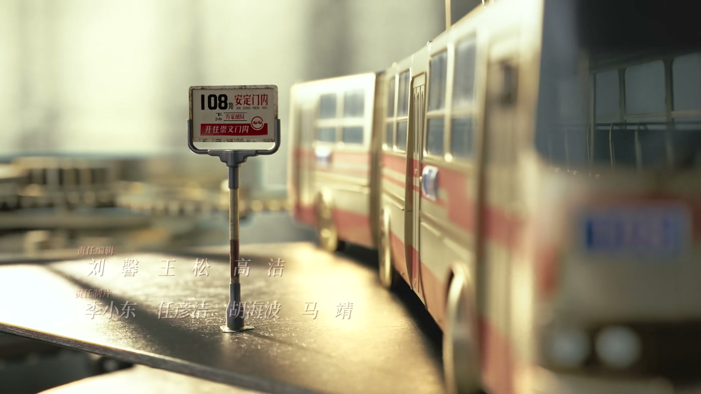
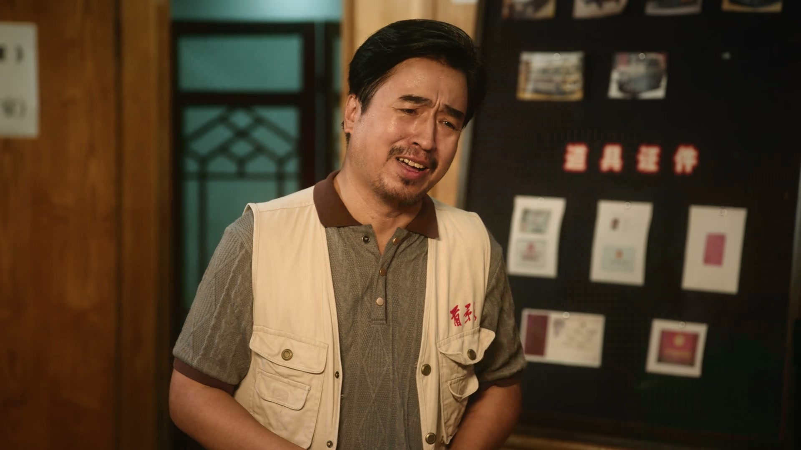
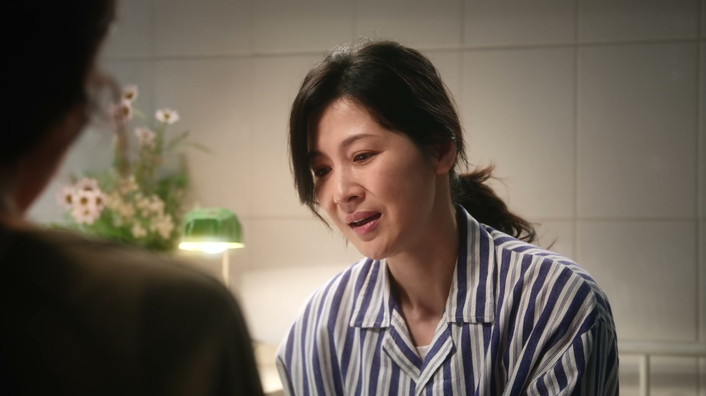
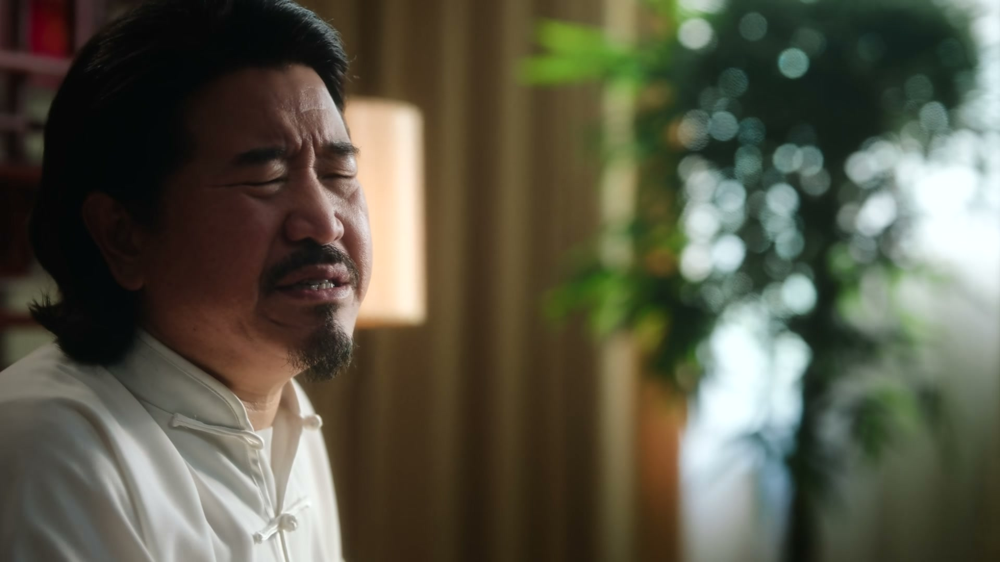
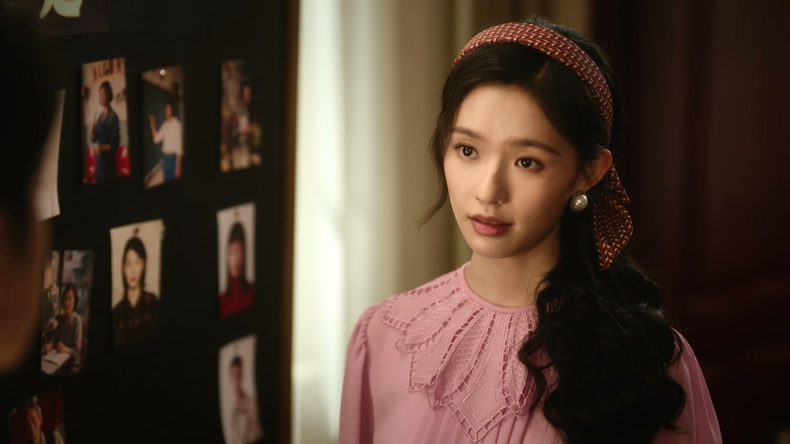
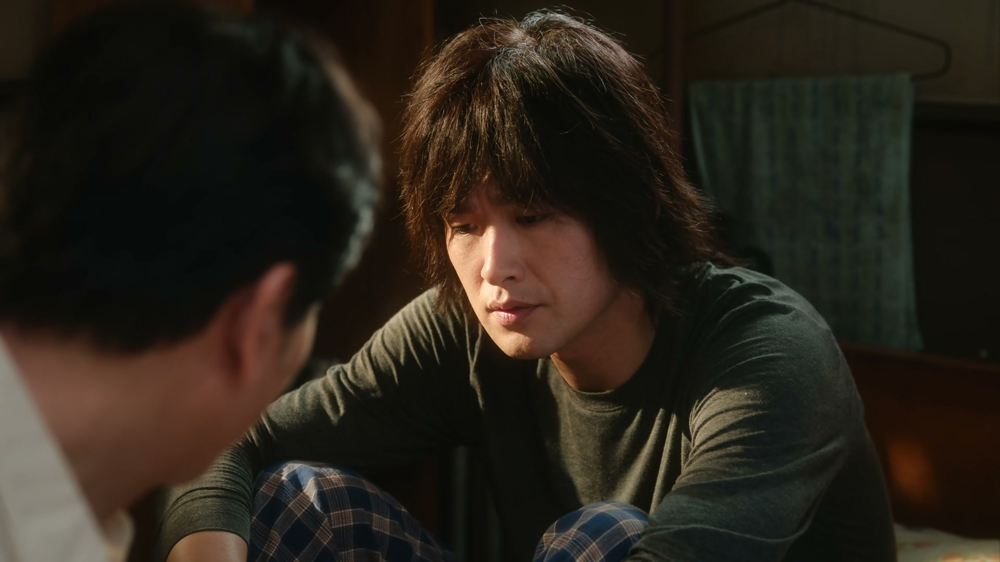
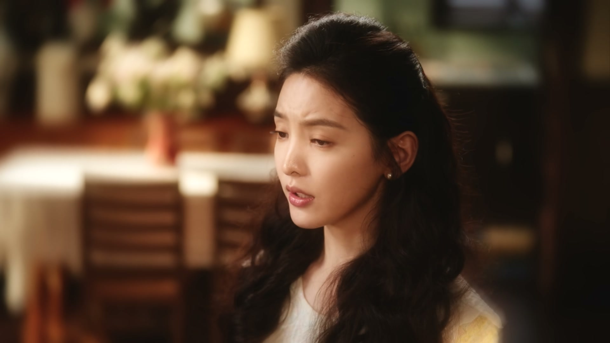
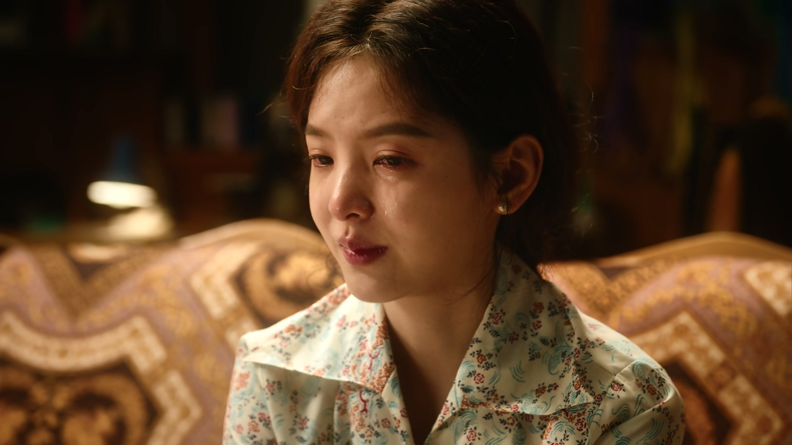
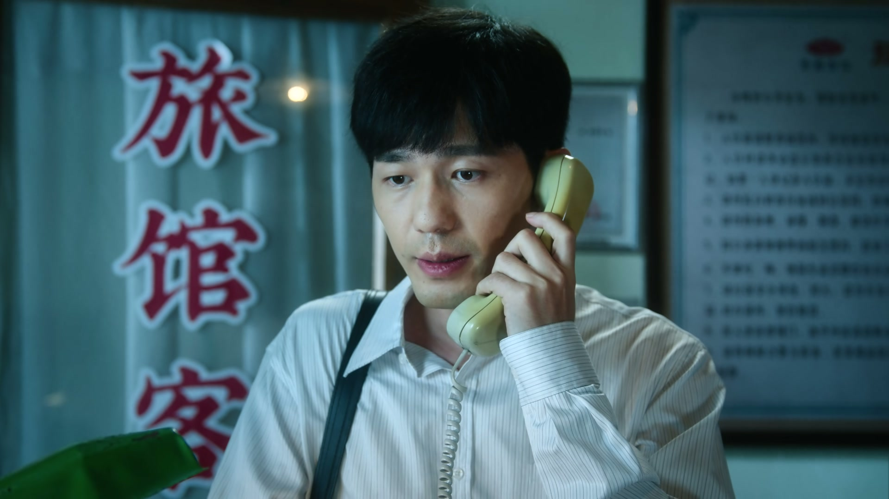
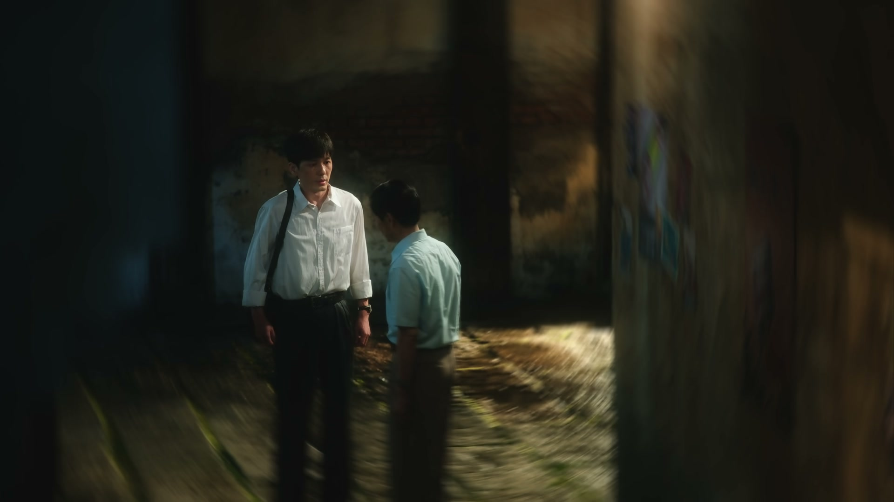

把责任拆一半下来
情境：老宅拍卖九十多万，徐胜利把剩余的钱推给翁导，两人约定各担一半。
遇到这种情况，可以这样做
- 出了事别急着撇清，先把自己那份扛起来。
- 两个人一起担，再沉的债也轻一半。

Drama Recap · 剧情图文总结
第 25 集 · 手术室的灯灭了
翁导把自己拆成了散落的零件替剧组还钱，徐胜利第一次体会到导演肩上的重量；姜红梅的手术在术中被紧急终止，曹广太守了一夜的希望落了空；沈冉冉宣布退出娱乐圈去当幼教，庄庄为了给妈妈治病决定放弃决赛，命运的钟摆在这一集狠狠摆了一回。
隋老板跑路留下的窟窿，把翁导逼成了拆零件还钱的人；一句“明知是火坑还愿意往里跳”，道出这群人对梦想最后的倔强。病房里姜红梅的手术在术中被紧急叫停，曹广太的希望塌了半边。沈冉冉决定退圈当幼教，陶亮亮对着林肯车独自咽下酸楚。庄庄也打来电话：她要退赛了。
翁导在旅馆里接二连三地接电话，全是剧组的人来要钱，呼机里的消息爆了，他却一个电话也不敢回。徐胜利心疼他，翁导却只说：人这一辈子，要有这么几件明知是火坑还愿意往里跳的事，也不见得是坏事。
剧里的鸡毛蒜皮，往往是人生的缩影。这些情节不只是故事——当你在现实中遇到同样的处境时，它们能提醒你：先做什么、别做什么、怎么说才有效。
情境：老宅拍卖九十多万，徐胜利把剩余的钱推给翁导，两人约定各担一半。
情境：沈冉冉拒绝靠楚总上位，宁可退圈去当幼教。
情境：庄庄为了给妈妈治病放弃决赛，妈妈却连夜做了一件结婚礼服。
情境：姜红梅的手术在术中被紧急终止，曹广太一夜之间从希望跌到失望。
情境：曹野劝大家：你不行别人就欺负你，你行了大家都会笑着看你。
情境：叶叔叔劝两人给彼此一点时间，有些话说出口就收不回了。

隋老板跑路后，剧组的人堵着翁导要钱，呼机里的消息爆了一串，翁导一个电话也不敢回。徐胜利看在眼里，心里像被针扎。
翁导笑着给自己打气：人这一辈子，要有这么几件明知是火坑还愿意往里跳的事，也不见得是坏事。随即把自己家房子、积蓄全拆出来，一点点补剧组的窟窿。
关键台词 · KEY QUOTES

庄庄守着妈妈，妈妈身体虚弱，脸上却挂着笑——她拿出连夜做的演出礼服，说是给庄庄结婚时穿的。庄庄摇头，非要等妈妈好了再穿，不合适还要妈妈改。
曹广太那边把姜红梅送进手术室，医生术前交代完风险，手术灯亮起。可没过多久，灯就灭了：肿瘤过大压迫动脉，继续手术风险太大，只能终止，先做放化疗缩小肿瘤。
关键台词 · KEY QUOTES

旅馆里，众人盘算着怎么填隋老板留下的窟窿。曹野劝大家：这年头人人都生着一颗不简单的脑袋，你不行别人就欺负你，可当你行了，大家都会笑着看你。
一番话说的是一碗热鸡汤，落在这群负债累累的年轻人头上，却更像一句咬牙的自我打气。
关键台词 · KEY QUOTES

沈冉冉把心里话倒给陶亮亮：你说过运气是留给有能耐的人，我觉得我能耐不够，接不住这份运气。这行当人人要先找个靠山再工作，她要靠这个出来，得到的角色又是哪个沈冉冉失去的呢？
陶亮亮想拦，沈冉冉却已经下了决心：不回湖州了，去找个幼教的工作，好好生活。陶亮亮愣在原地，那句“不想看她坐林肯车里”的话堵在嗓子眼。
关键台词 · KEY QUOTES

夜里，陶亮亮一个人吹萨克斯，吹着吹着泄了气。他坦白：我也有真心我也能拼命，可我没钱。拼命有真心有什么用？我想帮她实现梦想，不想看她坐那林肯车里。
曹广太以长辈的口气点他：您在我们这儿是兄弟，可要是在冉冉门前，您得是个男人。陶亮亮听了，攥着萨克斯的手紧了又松。
关键台词 · KEY QUOTES

手术室的门打开，医生宣布：术中发现肿瘤过大，压迫肺部动脉，继续手术风险太大，只能终止，先放化疗缩小肿瘤再制定新方案。曹广太守了一整夜，等来这句话，人像被抽空。
同一时间，电话那头的导演却传来好消息：决赛名单出来了，庄庄进入决赛，离梦想越来越近。悲与喜在同一天的不同角落里同时发酵。
关键台词 · KEY QUOTES
庄庄拨通电话，声音平静得反常：我决定退赛。对方惊得说不出话，反复确认，庄庄只回一句“我决定，对不起”。
徐胜利急得直跳：我们每天起早贪黑卖衣服、去俄罗斯倒货，不就是为了在北京坚持下去吗？现在梦想就在你眼前，你为什么突然放弃？庄庄说比赛的事她已经决定了。电话两端，两个人都红了眼眶。
关键台词 · KEY QUOTES

叶叔叔把徐胜利和庄庄叫回温州，围坐一桌当面谈。他先劝庄庄别放弃比赛：你放弃比赛，我的理想也没意义了。可庄庄说出退赛是为了给妈妈治病，叶叔叔一下噎住了。
他语重心长：虽然庄庄不是亲生的，但他就这一个孩子，跟亲生的没两样，到了这个岁数，不希望她一直飘着。有些话听到耳朵里是拔不出来的，这样对两个人都是一种伤害——他只能让两人都给彼此一点时间。
关键台词 · KEY QUOTES

为了还清银行的五十万，老宅被拍卖，拍了九十多万。徐胜利把剩下的钱都放进存折，交给翁导。
翁导不肯全收，两人争来争去，最后约定：这件事是两个人一块儿干的，责任各担一半。警察那边也传来消息——人抓到了，钱虽被挥霍，但要他赔偿也不是不可能。
关键台词 · KEY QUOTES

翁导独自躺在异乡的小旅馆里，一夜之间白了许多头发。他想起自己当年也是从俄罗斯倒货起家，如今却落得债台高筑，苦笑里带着咽不下的不甘。
曹广太也做了决定：姜红梅这次手术没能做成，他怕错过最佳治疗期，之后复发风险更大，得把她转到上海更好的医院。一个为梦想，一个为家人，两班人都没打算停下。
关键台词 · KEY QUOTES
陪着翁导拆家底还债，拍卖老宅凑钱，把剩余积蓄分一半给翁导，决定各担一半责任。
为了给妈妈治病决定放弃决赛，被叶叔叔和徐胜利轮流劝，仍咬定比赛的事已作决定。
决定退出娱乐圈，认定自己接不住这份运气，去找幼教工作好好生活。
因没钱而痛苦，想帮冉冉实现梦想却无能为力，被曹广太点醒“在冉冉门前得像个男人”。
为了还剧组欠款拆光家底，一夜白头，躺在异乡旅馆里回忆自己从俄罗斯倒货起家的旧梦。
手术终止后仍不放弃，决定带姜红梅转院上海，怕错过最佳治疗期。
亲自到北京把两人叫回温州调停，既心疼庄庄放弃比赛，又体谅她为妈妈治病的选择。
用“每个人的脑袋都不简单”劝大家咬牙坚持，在旅馆里替众人打气。
房子、积蓄、身家，翁导把自己一点一点拆出去填剧组的窟窿，成了这一集最沉的一幕。
妈妈虚弱地拿出连夜做的礼服，庄庄哭着说等你好了再穿——母爱在这一针一线里具象化。
肿瘤压迫动脉，手术终止，曹广太守了一整夜的希望被一纸诊断浇灭。
陶亮亮在萨克斯声里坦白“我有真心也有拼命，可我没钱”，字字扎心。
徐胜利拿老宅填债，又把剩余的钱分给翁导各担一半，患难兄弟情在这一叠钞票里显形。
翁导坐在旅馆里回望俄罗斯倒货的往事，这段旧忆会把他和徐胜利一起推向俄罗斯的生意场。
曹广太怕错过最佳治疗期决定转院，姜红梅的病情从此成为旅馆众人悬着的一颗心。
她咬定“比赛的事已经决定了”，但这个决定还没有被真正讲给徐胜利听，裂缝只是暂时被叶叔叔按住。
“让他赔偿也不是不可能”——这笔追偿，为后续债务风波留下了一丝松动的可能。